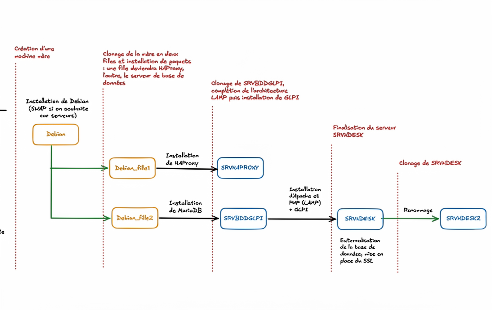

greenbeans·projets
Ici, vous trouverez des travaux pratiques, permettant d'appréhender des notions de cours, des projets répondant à des demandes professionnelles ou scolaires, ainsi que d'autres, plus personnels, à des fins d'expérimentation.
Ici, vous trouverez des travaux pratiques, permettant d'appréhender des notions de cours, des projets répondant à des demandes professionnelles ou scolaires, ainsi que d'autres, plus personnels, à des fins d'expérimentation.
Les travaux pratiques présentés dans cette section ont pour but de mettre en avant l'aspect technique des cyberattaques et de les décomposer.
Quelle espérance de vie donnez-vous à votre mot de passe ?
Wireshark et tcpdump
Distributed Denial of Service
Travaux réalisés dans le cadre de devoirs ou au cours d'expériences professionnelles
Gestion de parc informatique avec GLPI, haute disponibilité HaProxy et sécurisation SSL.
Intégration d'une entreprise cliente dans Active Directory, scripts PowerShell, GPO et serveur de fichiers iSCSI.
Maquette réseau Packet Tracer et prototype virtuel VirtualBox pour l'ETP de Chasseneuil.



Notes personnelles et infrastructures montées à des fins de test ou pour améliorer son environnement de travail. Découverte de logiciels bureautiques
Il est temps de faire une petite infrastructure pour alléger mon ordinateur face aux postes que je vais virtualiser. Je dois aussi tenir compte de la contrainte physique de distance, comme je vais beaucoup bouger durant mon alternance
Nextcloud, Calligra, OnlyOffice, LibreOffice, LaTeX